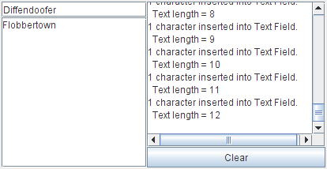

Lección: Escribiendo Listener Events
Sección: Implementando Listeners para los Eventos Comunmente Manejados
Cómo Escribir un Document Listener
Un componente de texto de Swing usa un
Document
para representar su contenido. Los eventos de documento ocurren cuando el contenido de un documento varía
de cualquier forma. Usted enlaza un document lister al documento de un componente de texto, en vez de al
componente de texto en sí mismo. Vea
Implementar un Filtro de Documento para más información.
El ejemplo siguiente demuestra los eventos de documento en dos componentes de texto plano.

Intente esto:
-
Pulse el botón Lanzar para ejecutar DocumentEventDemo usando
Java™ Web Start
(descargue KDJ 7 o
posterior). Alternativamente, para compilar y ejecutar el ejemplo por sí mismo, consulte el
índice de ejemplos.

-
Teclee en el campo de texto en la parte más alta izquierda de la ventana o en el area de texto debajo
del campo de texto.
Se dispara un evento de documento por cada carácter tecleado. -
Borre el texto con la tecla de retroceso.
Un evento de documento se dispara por cada tecla de retroceso tecleada. -
Seleccione el texto y entonces bórrelo tecleando retroceso o usando un comando de teclado tal como
CTRL-X(cortar).
Se dispara un evento de documento por el borrado entero. -
Copie el texto de un componente de texto al otro usando comandos de teclado tales como
CTRL-C(copiar) yCTRL-V(pegar).
Se dispara un evento de documento para la toda la operación de pegado, independientemente de la longitud del texto pegado. Si el texto es seleccionado en el componente de texto de destino antes de que se emita el comando de pegado, se dispara un evento de documento adicional ya que el texto seleccionado es borrado primero.
Puede encontrar el código de la demostración en
DocumentEventDemo.java
. Aquí está el código de la gestión del evento de documento de la demostración:
public class DocumentEventDemo ... {
...//where initialization occurs:
textField = new JTextField(20);
textField.addActionListener(new MyTextActionListener());
textField.getDocument().addDocumentListener(new MyDocumentListener());
textField.getDocument().putProperty("name", "Text Field");
textArea = new JTextArea();
textArea.getDocument().addDocumentListener(new MyDocumentListener());
textArea.getDocument().putProperty("name", "Text Area");
...
class MyDocumentListener implements DocumentListener {
String newline = "\n";
public void insertUpdate(DocumentEvent e) {
updateLog(e, "inserted into");
}
public void removeUpdate(DocumentEvent e) {
updateLog(e, "removed from");
}
public void changedUpdate(DocumentEvent e) {
//Plain text components do not fire these events
}
public void updateLog(DocumentEvent e, String action) {
Document doc = (Document)e.getDocument();
int changeLength = e.getLength();
displayArea.append(
changeLength + " character" +
((changeLength == 1) ? " " : "s ") +
action + doc.getProperty("name") + "." + newline +
" Text length = " + doc.getLength() + newline);
}
}
Los document listeners no deben modificar el contenido del documento; El cambio ya está completo para cuando el
listener es notificado del cambio. En su lugar, escriba un documento personalizado que sobreescriba los métodos
insertString o remove, o ambos. Vea
Monitorizar Cambios en un Documento para los detalles.
La IPA de Document Listener
El Interfaz de DocumentListener
DocumentListener no tiene clase adaptadora.
| Método | Propósito |
|---|---|
| changedUpdate(DocumentEvent) |
Llamado cuando el estilo de algunos de los textos en el documento monitorizado cambia. Esta clase de
evento se dispara sólo desde un StyledDocument — un PlainDocument no
dispara estos eventos.
|
| insertUpdate(DocumentEvent) | Llamado cuando se inserta texto en el documento monitorizado. |
| removeUpdate(DocumentEvent) | Llamado cuando el texto es eliminado del documento monitorizado. |
A cada método de evento de documento se le pasa un objeto que implement el interfaz DocumentEvent.
Normalmente, esta es una instancia de
DefaultDocumentEvent, definida en AbstractDocument.
| Método | Propósito |
|---|---|
| Document getDocument() |
Devuelve el documento que disparó el evento. Note que el interfaz DocumentEvent no hereda
de EventObject. Por lo tanto, no hereda el método getSource.
|
| int getLength() | Devuelve la longitud del cambio. |
| int getOffset() | Devuelve la ubicación dentro del documento del primer caracter cambiado. |
| ElementChange getChange(Element) |
Devuelve detalles sobre qué elementos en el documento han cambiado y cómo.
ElementChange es un interfaz definido en el interfaz DocumentEvent.
|
| EventType getType() |
Devuelve el tipo de un cambio que ocurrió.
EventType es una clase definida dentro de la interfaz DocumentEvent
que enumera los posibles cambios que pueden ocurrir en un documento: insertar texto, eliminar
texto, y cambios del estilo de texto.
|
Ejemplos que Usan Document Listeners
La tabla siguiente lista los ejemplos que usan document listeners.
| Ejemplo | Dónde está descrito | Notas |
|---|---|---|
DocumentEventDemo
|
Esta sección | Informa de todos los eventos de documneto que ocurren en los documentos tanto para el campo de texto como el área de texto. Un listener escucha a amobos componentes de texto y usa una propiedad del cliente en el documento para determina qué componente disparó el evento. |
TextComponentDemo
|
Monitorizar Cambios en un Documento |
Actualiza un registro de cambios cada vez que cambia el texto del documento monitorizado. El documento
en este ejemplo admite texto con estilo, por lo que en este ejemplo se llama a
changedUpdate. Requiere este archivo fuente adicional:
DocumentSizeFilter
|